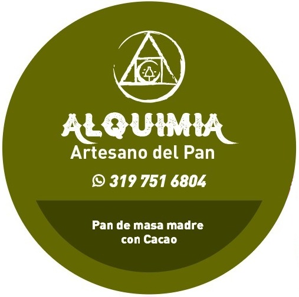
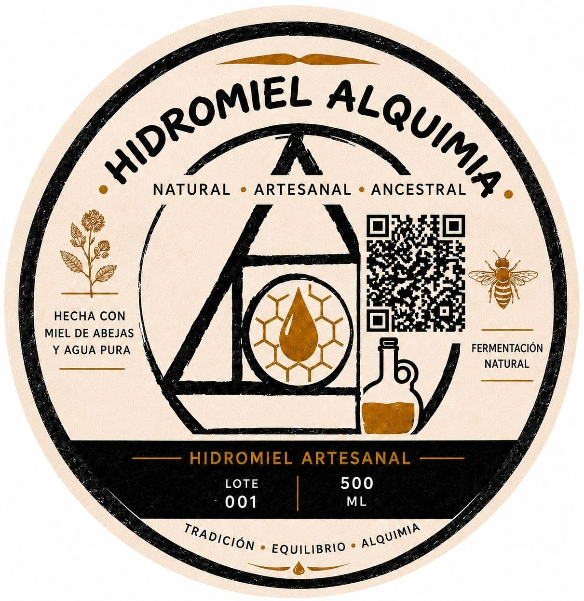

ALQUIMIA Artesano Del Pan
En Alquimia Artesanos del Pan respetamos el tiempo que necesita una verdadera masa madre: la cuidamos, la acompañamos y dejamos que la fermentación lenta haga su magia.
Rescatamos los antiguos procesos de los panaderos y trabajamos con harinas artesanales, para crear un pan con más carácter, aroma y sabor.

Hidromiel Alquimia
Inspirada en los rituales ancestrales de los pueblos nórdicos, nuestra hidromiel rescata el espíritu de una bebida digna de los dioses. Cada sorbo es un viaje al pasado: aromas, sabores y matices que evocan antiguos banquetes, leyendas y tierras lejanas.